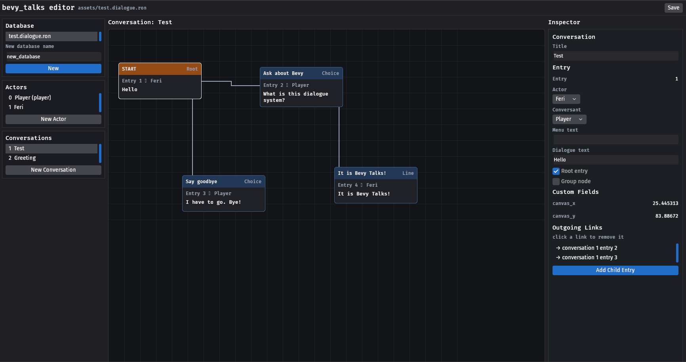

Introduction
⚠
bevy_talksis in development. The API described here is young and will change. Feedback is very welcome.
bevy_talks is a dialogue system for Bevy. It gives
your game:
- A dialogue database asset: actors and conversations authored as
.dialogue.ronfiles, loaded through the Bevy asset server. - Conversations as graphs: each conversation is a directed graph of entries: spoken lines, player choices, and organizational group nodes, connected by links.
- A runtime that plays them: spawn a
DialogueRunner, observe the events it emits, and render them however your game wants. - A variable store: a
Variablesresource seeded from the database, the shared game state that dialogue and gameplay read and write. - Conditions and scripts: entries carry Rhai logic that gates branches and runs effects, with your own Bevy systems callable from dialogue.
- Sequences and cutscenes: entries stage what happens while a line plays, with timed cues that call into your game: camera moves, animations, pauses.
- A visual editor: a Bevy app for authoring databases: a node canvas for the conversation graph, an inspector for entries and actors, and save/load.
The shape of a conversation
Every conversation starts at its root entry and flows along links. An entry spoken by a non-player actor is presented as a line; when the only ways forward are entries spoken by a player actor, they are offered as a choice menu. When there are no links left, the conversation ends.
graph LR
START --> hello["Actor 1: Hello"]
hello --> ask["Player: Ask about Bevy"]
hello --> bye["Player: Say goodbye"]
ask --> answer["Actor 1: It's a game engine in Rust!"]
Where to go next
- Getting Started — play your first conversation.
- The Dialogue Database — the data model.
- Playing Conversations — the runtime in detail.
- The Editor — authoring without writing RON by hand.
Getting Started
Install
Add the plugin to your app:
use bevy::prelude::*;
use bevy_talks::prelude::*;
fn main() {
App::new()
.add_plugins((DefaultPlugins, TalksPlugin))
.run();
}TalksPlugin registers the DialogueDatabase asset, its .dialogue.ron loader, and the conversation runtime.
Author a database
Put a .dialogue.ron file in your assets folder — either written by hand (see the format) or authored in the editor. A minimal one:
(
version: "1",
actors: [
(id: 0, name: "Player", is_player: true),
(id: 1, name: "Actor 1", is_player: false),
],
conversations: [
(
id: 1,
title: "Greeting",
actor: 0,
conversant: 1,
entries: [
(
id: 1, actor: 1, conversant: 0,
menu_text: "", dialogue_text: "",
is_root: true, is_group: false,
links: [(dest_conversation: 1, dest_entry: 2)],
),
(
id: 2, actor: 1, conversant: 0,
menu_text: "", dialogue_text: "Welcome back.",
is_root: false, is_group: false,
links: [],
),
],
),
],
)
Play it
Spawning a DialogueRunner starts the conversation.
Observe the events it emits and drive it with AdvanceConversation and ChooseResponse:
fn start(mut commands: Commands, assets: Res<AssetServer>) {
let db: Handle<DialogueDatabase> = assets.load("my_game.dialogue.ron");
commands.spawn(DialogueRunner::new(
db,
ConversationRef::Title("Greeting".to_owned()),
));
}
fn show_line(line: On<SubtitleStarted>) {
println!("{}", line.subtitle.text);
// present the line, then when the player continues:
// commands.trigger(AdvanceConversation { entity: line.entity });
}
fn show_menu(menu: On<ResponseMenuOpened>) {
for (i, response) in menu.responses.iter().enumerate() {
println!("{}) {}", i + 1, response.text);
}
// when the player picks one:
// commands.trigger(ChooseResponse { entity: menu.entity, index });
}
fn done(_: On<ConversationEnded>) {
println!("bye!");
}Register the observers with app.add_observer(...), or scope them to one runner with .observe(...) at the spawn site.
A complete example
The repository ships a playable terminal example:
cargo run --example terminal
It plays assets/test.dialogue.ron in your shell.
The Dialogue Database
A DialogueDatabase is the unit of authored content: one asset holding the cast and every conversation that plays against it.
graph TD
DB[DialogueDatabase] --> Actors
DB --> Variables
DB --> Conversations
Conversations --> Entries[DialogueEntry]
Entries --> Links[Link]
Actors
pub struct Actor {
pub id: ActorId, // unique within the database
pub name: String,
pub is_player: bool,
pub fields: Vec<Field>, // custom data
}is_player matters at runtime: entries spoken by player actors become menu choices, entries spoken by everyone else are presented as lines.
Variables
pub struct Variable {
pub name: String, // unique within the database
pub initial: FieldValue, // what it starts as
pub fields: Vec<Field>, // custom data
}Named game-state values and what they start as. At runtime they seed the Variables store.
Conversations
pub struct Conversation {
pub id: ConversationId, // unique within the database
pub title: String, // the human-facing handle, used to start it
pub actor: ActorId, // default speaker
pub conversant: ActorId, // default listener
pub entries: Vec<DialogueEntry>,
pub fields: Vec<Field>,
}Entries
An entry is one node of the conversation graph:
pub struct DialogueEntry {
pub id: EntryId, // unique within its conversation
pub actor: ActorId, // who speaks
pub conversant: ActorId, // who is spoken to
pub menu_text: String, // label when offered as a choice
pub dialogue_text: String,// the spoken line
pub is_root: bool, // the conversation's entry point
pub is_group: bool, // organizational pass-through node
pub links: Vec<Link>,
pub fields: Vec<Field>,
}- Exactly one entry per conversation should be the root (the starting point). Its own text is never displayed.
- Group entries carry no dialogue of their own: at runtime they are transparent, and evaluation flows straight through their links. Use them to organize large graphs.
menu_textanddialogue_textare separate so a choice can read differently in the menu (“Ask about the ship”) than when spoken (“So… what’s the deal with the ship?”). Ifmenu_textis empty, menus fall back todialogue_text.
Links
pub struct Link {
pub dest_conversation: ConversationId,
pub dest_entry: EntryId,
}A link is a directed edge to any entry, including entries of other conversations, which lets long dialogue be split into manageable pieces. Link order is meaningful: menus offer choices in link order.
Custom fields
Every actor, conversation, and entry carries a fields bag:
pub struct Field {
pub title: String,
pub value: FieldValue, // Text | Number | Boolean | Localization | Actor
}Fields are the extension point for anything the core schema doesn’t model: game-specific metadata, localized text variants, editor data.
The editor itself stores node canvas positions as canvas_x/canvas_y number fields.
The dialogue.ron Format
Databases are stored as RON files with the .dialogue.ron extension.
The file is a direct serialization of DialogueDatabase.
(
version: "1",
variables: [
(name: "AcceptedJob", initial: Boolean(false)),
],
actors: [
(
id: 0,
name: "Player",
is_player: true,
fields: [],
),
],
conversations: [
(
id: 1,
title: "Greeting",
actor: 0,
conversant: 1,
entries: [
(
id: 1,
actor: 1,
conversant: 0,
menu_text: "",
dialogue_text: "Hello",
is_root: true,
is_group: false,
links: [
(dest_conversation: 1, dest_entry: 2),
],
fields: [
(title: "mood", value: Text("cheerful")),
(title: "canvas_x", value: Number(25.0)),
],
),
],
fields: [],
),
],
)
Notes:
fieldsandvariablesmay be omitted, as may an entry’sconditionandscript(see Conditions and Scripts).- Field values are tagged enum variants:
Text("…"),Number(1.5),Boolean(true),Localization("…"),Actor(2). - Loading is lenient: files that parse are accepted even if their content has problems. See Validation.
Validation
bevy_talks never refuses to load a database because its content is wrong.
Instead, validation is a separate, explicit step that reports problems:
use bevy_talks::prelude::validate;
for issue in validate(&db) {
warn!("{issue}");
}An empty result means the database is clean. The reported Issues:
| Issue | Meaning |
|---|---|
DuplicateActor | two actors share an id |
DuplicateConversation | two conversations share an id |
DuplicateEntry | two entries in one conversation share an id |
NoRoot | a conversation has no root entry |
MultipleRoots | a conversation has more than one root entry |
DanglingLink | a link points at a missing destination |
The editor runs validation continuously and shows the result in its status bar.
Playing Conversations
The runner
A conversation plays on a runner entity. Spawning it is starting it:
commands.spawn(DialogueRunner::new(
database_handle,
ConversationRef::Title("Greeting".to_owned()), // or ConversationRef::Id(..)
));The runner waits until the database asset is loaded, finds the conversation, and steps from its root entry.
From then on it is a small state machine, exposed as runner.phase:
Starting: waiting for the asset.Presenting: a line is on screen; waiting forAdvanceConversation.AwaitingChoice: a menu is open; waiting forChooseResponse.Ended: done.
⚠ The DialogueRunner entity stays alive in
Endedphase. Despawning it is your call.
Events
All communication happens through entity events on the runner.
Emitted by the runner (observe globally with app.add_observer, or on the runner entity with .observe):
| Event | Payload | Meaning |
|---|---|---|
SubtitleStarted | subtitle, speaker, listener | present this line |
ResponseMenuOpened | responses | present this choice menu |
ConversationEnded | nothing follows |
Triggered by the game:
| Event | Meaning |
|---|---|
AdvanceConversation { entity } | the current line is done, continue |
ChooseResponse { entity, index } | pick the index-th offered response |
Inputs in the wrong phase (advancing while a menu is open, an out-of-range index) are logged and ignored.
The flow
flowchart TD
spawn([spawn DialogueRunner]) --> step
step{evaluate links of\ncurrent entry}
step -->|first non-player response| line[SubtitleStarted]
step -->|only player responses| menu[ResponseMenuOpened]
step -->|no responses| ended[ConversationEnded]
line -->|AdvanceConversation| step
menu -->|ChooseResponse| chosen[SubtitleStarted\nfor the chosen line]
chosen -->|AdvanceConversation| step
The stepping rules:
- Links are evaluated in order.
- If any reachable response is spoken by a non-player actor, the first one wins and is presented as the next line.
- Otherwise, all reachable player responses become the menu, labeled with
menu_text. The chosen entry is then presented as a spoken line before stepping onward. - No responses means the conversation ends.
- The root entry’s own text is skipped; conversations effectively begin at whatever the root links to.
Actors and Participants
Every line already knows its actors
When you author an entry in the editor, you pick two actors for it: who speaks the line and who is being spoken to. That information is stored in the database, so the runtime never has to guess who is talking.
When the runner presents a line, the SubtitleStarted event carries both as
ActorIds:
fn show_line(line: On<SubtitleStarted>) {
let speaker_id = line.subtitle.actor; // who says the line
let listener_id = line.subtitle.conversant; // who it's said to
// look the name up in the database:
// db.actors.iter().find(|a| a.id == speaker_id).map(|a| &a.name)
}If all your UI needs is a name above a text box, you are done. Look the name up by id and render.
The problem Participants component solves
An ActorId is just a number in a data file. Suppose a line is spoken by ActorId(1), “Ferry Keeper”.
The runtime has no idea that the ferry keeper in your scene is that entity standing on the pier.
If you want to spawn a speech bubble above her head or point the camera at her, you need an
Entity, not an id.
Participants is how you tell the dialogue runner. It’s an optional component, a plain map from ActorId to Entity,
added next to the DialogueRunner when you spawn it:
use std::collections::HashMap;
commands.spawn((
DialogueRunner::new(db, ConversationRef::Title("Greeting".to_owned())),
// "in this conversation, actor 0 is the player entity,
// and actor 1 is the ferry keeper entity"
Participants(HashMap::from([
(ActorId(0), player_entity),
(ActorId(1), ferry_keeper_entity),
])),
));With the map in place, the runner does the lookup for you on every line:
fn show_line(line: On<SubtitleStarted>) {
if let Some(speaker_entity) = line.speaker {
// `speaker_entity` is the actual Entity, we can spawn the bubble above it
}
}The rules:
line.subtitle.actor/line.subtitle.conversant: theActorIds. Always present, straight from the database.line.speaker/line.listener:Option<Entity>.Someonly when aParticipantsmap on the runner contains that actor’s id.Nonein every other case: noParticipantscomponent, or the id isn’t in the map.
- You don’t have to map every actor in the conversation. Only the ones you want resolved. Unmapped actors simply come through as
None.
Why the indirection
Because the conversation data only ever references actor ids, the same
graph can play against different casts. A generic “Merchant” conversation
can run in three towns: each runner maps ActorId(1) to a different
merchant entity, and the dialogue itself never changes.
Variables
Variables are the game state that dialogue reads and writes: has the player accepted the job, how much gold do they carry, what name did they pick. They also drive conditions and scripts on entries.
There are two halves: definitions in the database, and a live store at runtime.
Defining variables in the database
The database carries a list of variables with their starting values:
pub struct Variable {
pub name: String, // unique within the database
pub initial: FieldValue, // what it starts as
pub fields: Vec<Field>, // custom data
}In a .dialogue.ron file:
(
version: "1",
variables: [
(name: "AcceptedJob", initial: Boolean(false)),
(name: "Gold", initial: Number(10.0)),
(name: "PlayerName", initial: Text("")),
],
actors: [ /* … */ ],
conversations: [ /* … */ ],
)
variables may be omitted entirely; old files load unchanged.
The Variables resource
At runtime all values live in one resource, a plain map from name to FieldValue:
#[derive(Resource)]
pub struct Variables(pub HashMap<String, FieldValue>);When a database asset loads, the plugin seeds the store: every variable the store doesn’t know yet is inserted at its initial value. Values that already exist are left alone, so a hot-reloaded database never overwrites state the game has changed.
Read and write it like any resource:
fn accept_job(mut vars: ResMut<Variables>) {
vars.set("AcceptedJob", true);
vars.set("Gold", vars.number("Gold") + 50.0);
}
fn greet(vars: Res<Variables>) {
if vars.truthy("AcceptedJob") {
// ...
}
}set accepts anything convertible into a FieldValue (bool, f32, &str, String). Variables don’t have to be declared in the database. set creates them on the fly; the database list is just the authored starting state.
Reading values
A missing variable or a type mismatch returns the type’s default instead of panicking.
| Accessor | Returns | On missing / wrong type |
|---|---|---|
get(name) | Option<&FieldValue> | None |
truthy(name) | bool | false |
number(name) | f32 | 0.0 |
text(name) | &str | "" |
Variables reset when the game closes. To keep them across sessions, see Saving and Loading.
Conditions and Scripts
Entries can carry logic. A condition decides whether the entry can be reached, a script runs when the entry is presented. Both are written in Rhai, a small scripting language embedded in the library, and both are optional. A third kind of entry logic, the sequence, schedules what happens on screen while the line plays; it has its own page.
(
id: 3,
menu_text: "Bribe the guard",
dialogue_text: "Perhaps this changes your mind.",
condition: "vars[\"Gold\"] >= 10",
script: "vars[\"Gold\"] -= 10; guard_bribed()",
// ...
)
In the editor both live in the Logic section of the entry inspector.
The vars binding
Conditions and scripts see the variable store as vars:
vars["Gold"] >= 10 // read
vars["AcceptedJob"] = true // write, creates the variable if needed
vars.has("MetBoris") // existence check
Reading a variable that doesn’t exist is an error, so typos surface as warnings instead of silently comparing against a default. Numbers are floats on the script side, but Rhai mixes integers and floats freely: vars["Gold"] >= 10 works.
Conditions
A condition is a single expression that returns a bool. When the runner follows links, every destination is checked: entries whose condition fails are dropped. A choice disappears from the menu, an NPC branch is skipped, and gating a group node cuts off everything behind it. An empty condition always passes.
Conditions are expressions only. Statements like vars["x"] = 1 don’t compile there, which catches the classic = versus == mistake at load time.
Scripts
A script runs when its entry is presented as a line, after the visit is recorded and before SubtitleStarted fires, so anything the script writes is visible to your observers. Scripts are full Rhai: statements, if, let, function calls.
Scripts run once per presentation. Resuming a saved conversation re-presents the line without re-running its script, matching how resume skips visit counting.
Calling into your game
The game can expose Bevy systems to dialogue logic:
app.add_dialogue_system("has_item", |In(name): In<String>, inventory: Res<Inventory>| {
inventory.contains(&name)
});
app.add_dialogue_system("give_item", |In(name): In<String>, mut inventory: ResMut<Inventory>| {
inventory.add(&name);
});A condition can now say has_item("sword") and a script give_item("sword"). The function runs as a one-shot system in the middle of evaluation, with everything a system can do: queries, resources, commands.
The system’s In input is the argument list: a single value or a tuple, up to four arguments, of bool, i64, f64, f32, String, or Dynamic. Integer arguments coerce to float parameters. The return value, if any, becomes the call’s result in the script; systems returning nothing are fine for fire-and-forget calls.
Register systems before the app runs; the script engine picks up changes to the registered set automatically.
When logic breaks
Broken logic never blocks dialogue. A condition that fails to compile, errors at runtime, or returns something that isn’t a bool passes with a warning in the log. A failing script is reported and skipped. Warnings name the conversation and entry, so a typo in a condition shows up as a log line, not as a quest that can’t be started.
Compilation of the script code happens once when the database loads, so syntax errors in any entry are reported up front, before the entry is ever reached.
Try it
The shop example plays a merchant whose greeting, stock, and prices are driven by everything on this page: conditions calling a gold() system, scripts spending it, and a give_item system filling a game resource.
cargo run --example shop
Sequences and Cutscenes
A sequence is Rhai code that runs when the entry is presented, but instead of doing things on the spot, it schedules cues: timed instructions played out while the line is on screen. Camera moves, animations, sounds, pauses.
(
id: 5,
dialogue_text: "You dare come back here?",
sequence: "shake_camera(0.5); play_anim(\"point\").at(0.8); wait(line_end)",
// ...
)
In the editor the sequence lives in the Logic section of the entry inspector, next to the condition and the script.
The timing methods
Every scheduled cue returns a handle, and the timing methods chain on it:
wait(2.0) // a cue that lasts two seconds
emit("looked") // fires a message, instantly
play_anim("draw").at(1.5) // starts 1.5 seconds in
play_sound("gasp").after("looked") // starts when that message fires
zoom("closeup").emits("zoomed") // fires a message when done
reset_camera().required() // still runs if the line is skipped
at delays a cue’s start. after holds it until a message fires. emits fires a message when the cue finishes, which is how cues chain off each other without counting seconds. required marks cleanup that must happen even when the player skips the line.
wait and emit are built in. Everything else is a command your game registers.
A sequence is full Rhai, so it can branch on game state:
if vars["Scared"] { play_anim("cower") } else { play_anim("smirk") }
wait(line_end)
line_end and the default sequence
line_end is the estimated reading time of the line: its character count divided by a reading speed, with a floor so short lines don’t flash by. An entry with no sequence plays a default one instead. So every presented line plays a sequence and every line has a clock, even when nobody authored one.
Both knobs live in the SequencerSettings resource:
| Field | Default | What it does |
|---|---|---|
chars_per_second | 30.0 | Reading speed line_end is estimated with. Lower it for slower, more deliberate pacing. |
min_seconds | 1.0 | The floor for line_end: even a “Hi.” stays up this long. |
default_sequence | "wait(line_end)" | The sequence played by entries that don’t author one. |
TalksPlugin inserts the defaults; to customize, overwrite the resource:
app.insert_resource(SequencerSettings {
chars_per_second: 15.0,
min_seconds: 2.0,
default_sequence: r#"wait(line_end); emit("line_done")"#.to_owned(),
});The default sequence is full Rhai like any authored one, so it can call your registered commands — handy for a blip sound or a portrait animation on every unauthored line. It is also the fallback: an authored sequence that fails to evaluate logs a warning and plays the default instead. Setting default_sequence to an empty string makes unauthored lines play no cues at all, so their LineFinished fires immediately.
Registering commands
Commands are Bevy systems, registered like dialogue systems:
app.add_sequencer_command("play_anim", play_anim);
fn play_anim(In((cue, clip)): In<(Entity, String)>, /* any system params */) -> CueLife {
// start the clip...
CueLife::For(Duration::from_secs_f32(1.2))
}The system’s In input is the cue entity paired with the arguments (a value or a tuple, up to four of bool, i64, f64, f32, String, or Dynamic). It returns how long the cue lives:
CueLife::Instant: done the moment it ran.CueLife::For(duration): done after that long.CueLife::Until: open-ended. The game finishes it by triggeringFinishCueon the cue entity, when the audio ends, the tween completes, the character arrives.
Pacing the conversation
When a line’s last cue finishes, LineFinished fires on the runner. Advancing stays your call, so nothing moves until you trigger AdvanceConversation. A game that wants sequences to pace the dialogue wires the two together with one observer:
app.add_observer(|line: On<LineFinished>, mut commands: Commands| {
commands.trigger(AdvanceConversation { entity: line.entity });
});With that in place a conversation plays itself: each line stays up for its reading time, or for as long as its cues take, then flows on. Menus still wait for a choice. Manual advance, auto-play, and switching between the two are covered in Manual and Auto Advance.
Skipping
Trigger SkipLine on the runner to fast-forward the line’s sequence without advancing the conversation. The sequence ends immediately but lands on the same state it would have reached by playing out: required cues that hadn’t started yet still run (marked with a Skipped component, so their handlers can jump straight to the end result), every running cue gets a CueSkipped event to snap its effects to their final state, and LineFinished fires.
Advancing or choosing while a sequence is still playing cuts it short the same way, except LineFinished does not fire, since the line was replaced rather than finished.
Script or sequence?
If it changes the game, it is a script. If it shows the game, it is a sequence.
The two fields differ in when they re-run. A script runs once per visit and never on resume. A sequence replays every time the line is presented, including when a saved conversation resumes, because the re-presented line still needs its cues and its clock. The whole sequence body re-runs to rebuild the cue list, so writing game state there means paying for it again on every load. Keep vars writes and calls like spend(10) in the script; a sequence should be safe to run twice.
Try it
The cutscene example plays a stormy inn scene that runs on its own: sound effects landing mid-line, a song chained with messages, a required cue that survives skipping, and the one-observer auto-advance. Enter skips a line.
cargo run --example cutscene
Manual and Auto Advance
Who decides when the next line comes? Some games wait for a click on every line, others also offer an auto mode.
The key idea: a presented line is not instant, it plays for a while. A line with a sequence plays for as long as its effects take.
Three events are involved. Two are commands your game sends to the dialogue runner:
AdvanceConversationends the current line and moves on.SkipLinefast-forwards the current line without leaving it. FiresLineFinishedat the end.
The third goes the other way, from the runner to your game:
LineFinishedreports that the line has finished playing. It exists so your game knows the line has nothing left and can advance the conversation.
Manual
You can just ignore LineFinished entirely and advance on input:
// on click / key press, while the runner is presenting:
commands.trigger(AdvanceConversation { entity: runner });This is the shop example.
Manual with fast-forward
What most dialogue-heavy games do: the first press finishes the line, the second moves on. Track whether the line has played out with a marker:
#[derive(Component)]
struct LineDone;
app.add_observer(|line: On<LineFinished>, mut commands: Commands| {
commands.entity(line.entity).insert(LineDone);
});
app.add_observer(|line: On<SubtitleStarted>, mut commands: Commands| {
commands.entity(line.entity).remove::<LineDone>();
});Then input branches on the marker:
fn on_press(runner: Entity, done: bool, commands: &mut Commands) {
if done {
commands.trigger(AdvanceConversation { entity: runner });
} else {
commands.trigger(SkipLine { entity: runner });
}
}Press once to jump to the end, press again to continue.
Auto-play
One observer, and the lines pace themselves:
app.add_observer(|line: On<LineFinished>, mut commands: Commands| {
commands.trigger(AdvanceConversation { entity: line.entity });
});Every line stays up for its reading time, or for as long as its authored effects take, then flows on.
This is the cutscene example. Input still works: SkipLine fires LineFinished, which this observer turns into an advance, so pressing skip in auto mode jumps to the next line.
To give readers more time without touching every entry, stretch the default reading-time clock in SequencerSettings:
settings.default_sequence = "wait(line_end + 0.75)".to_owned();The toggle
Both modes can be the same two observers with a switch in front:
#[derive(Resource, Default)]
struct AutoPlay(bool);
app.add_observer(
|line: On<LineFinished>, auto: Res<AutoPlay>, mut commands: Commands| {
if auto.0 {
commands.trigger(AdvanceConversation { entity: line.entity });
} else {
commands.entity(line.entity).insert(LineDone);
}
},
);Input keeps the fast-forward branching from above. One catch when the player turns auto on: the current line may have finished long ago, sitting there waiting for a press that will never come. Catch it up when the flag flips:
fn enable_auto(
mut auto: ResMut<AutoPlay>,
waiting: Query<Entity, With<LineDone>>,
mut commands: Commands,
) {
auto.0 = true;
for runner in &waiting {
commands.trigger(AdvanceConversation { entity: runner });
}
}Turning auto off needs nothing: the next LineFinished simply inserts the marker and waits.
Saving and Loading
Variables and visit counts live in resources, so they vanish when the game closes. The persistence layer turns them into a snapshot your game can store and apply back.
The library does not own save files. It has no opinion on where saves live, how they are encrypted, or when to write them.
It gives you a serializable DialogueSave and your game puts it wherever it keeps its saves.
Visit tracking
Before saving, it helps to know what gets saved. Besides variables, the runner records how often each entry has been reached in the Visits resource:
pub struct VisitCount {
pub offered: u32, // times the entry appeared in a response menu
pub displayed: u32, // times the entry was presented as a line
}Presenting a line bumps its displayed count; opening a menu bumps offered for every choice in it.
You can read it from your own systems, including dialogue systems called from conditions, for things like “only say this once”:
fn already_greeted(visits: Res<Visits>) -> bool {
visits.displayed((ConversationId(1), EntryId(2))) > 0
}The snapshot
DialogueSave captures variables and visits in one serializable struct:
// Saving: record the state and stringify it.
fn save_game(variables: Res<Variables>, visits: Res<Visits>) {
let snapshot = DialogueSave::record(&variables, &visits);
let text = save_to_ron(&snapshot).unwrap();
// write `text` into your save file
}
// Loading: parse and apply.
fn load_game(mut variables: ResMut<Variables>, mut visits: ResMut<Visits>) {
let text = /* read from your save file */;
let snapshot = save_from_ron(&text).unwrap();
snapshot.apply(&mut variables, &mut visits);
}save_to_ron/save_from_ron are conveniences. DialogueSave derives serde, so you can also embed it directly in your game’s own save struct and serialize everything together.
Applying merges
apply overwrites the values present in the snapshot and leaves everything else alone. Combined with database seeding (which only fills in variables the store doesn’t know), this makes loading order-independent and update-safe:
- Load the save before or after the database loads; the result is the same.
- Ship a game update that adds new variables or entries; old saves keep working. The new variables get their initial values, the saved ones keep their saved values.
Apply a save before anything reads Variables, or those reads see initial values for one moment.
Resuming a conversation
Runners are entities your game owns, so they are not part of DialogueSave. If you want to save mid-conversation, store the runner’s position in your own save data:
// Saving: where is the conversation?
let at: Option<(ConversationId, EntryId)> = runner.save_point();
// Loading: pick it back up.
commands.spawn(DialogueRunner::resume(database_handle, at));save_point returns the entry currently on screen, both while a line is presented and while a menu is open (the menu’s entry is the line the choices hang off). On load, the resumed runner re-presents that entry: your UI gets a fresh SubtitleStarted showing the line the player was reading when they saved. It does not count as a new visit. Advancing continues normally; if a menu was open at save time, it reopens on the first advance.
Most games don’t save mid-conversation. If yours doesn’t, skip all of this: an ended runner returns None and there is nothing to resume.
Rhai Reference
Conditions, scripts, and sequences all share one engine, so beyond what’s listed here they are plain Rhai: arithmetic, strings, if, let, loops, functions.
The variable store
It’s a simple map that is available everywhere. See Variables. You can access it and modify it in the following ways:
| Syntax | What it does |
|---|---|
vars["Name"] | Reads a variable. Unknown names are an error, so typos surface as warnings. |
vars["Name"] = value | Writes a variable, creating it if needed. Holds bools, numbers, and text. |
vars.has("Name") | Whether the variable exists. |
Numbers are floats on the script side, but Rhai mixes integers and floats freely: vars["Gold"] >= 10 works.
Built-in cues
Available in sequences, you can schedule cues instead of running on the spot.
| Call | What it schedules |
|---|---|
wait(seconds) | A simple wait to make a step in your cutscene to take as long as you need. |
emit("message") | Fires a named message. Other cues can start .after it. |
| Constant | Value |
|---|---|
line_end | The estimated reading time of the line being presented, from SequencerSettings. |
An entry with no sequence plays the default one, wait(line_end) unless you change it in SequencerSettings.
Timing methods
There are some built-in methods you can use for timing:
| Method | Effect |
|---|---|
.at(seconds) | Starts the cue that many seconds into the sequence. |
.after("message") | Holds the cue until that message fires. |
.emits("message") | Fires a message when the cue finishes. |
.required() | Still runs when the line is skipped, for cleanup and state that must land. |
An example:
shake_camera(0.5);
play_anim("draw").at(1.5).emits("drawn");
play_sound("gasp").after("drawn");
reset_camera().required();
wait(line_end)
Your game’s functions
You register your own Bevy systems so dialogue runners can call them by name. There are two ways to register one, because there are two different things a call can mean:
| Registration | It’s a… | The call in Rhai | What that means |
|---|---|---|---|
app.add_dialogue_system("has_item", system) | function | has_item("sword") | Runs right away and gives back an answer. |
app.add_sequencer_command("play_anim", system) | stage direction | play_anim("draw").at(1.5) | Doesn’t run yet when a runner reads the sequence. It’s staged for later, with a .at/.after/.emits/.required on when. |
Both kinds are callable everywhere: conditions, scripts, and sequences. That’s why a sequence can mix them, if has_item("lute") { play_anim() }: checking has_item happens immediately, while play_anim() gets scheduled to play out.
Both take up to four arguments of bool, i64, f64, f32, String, or Dynamic.
Where each field runs
| Entry field | Mode | Runs | Good for |
|---|---|---|---|
condition | Expression only — one expression returning a bool | When the runner checks whether the entry can be reached | Gating branches: vars["Gold"] >= 10 && has_item("sword") |
script | Full Rhai | Once per presentation; never on resume | Changing the game: vars["Gold"] -= 10; guard_bribed() |
sequence | Full Rhai, calls schedule cues | Every presentation, including resume | Showing the game: play_anim("bow"); wait(line_end) |
Broken logic never blocks dialogue: a condition that fails to compile or errors at runtime passes with a warning, a failing script is reported and skipped.
The Editor
The repository ships a visual editor as Bevy app, built on the bevy_feathers.
⚠
bevy_talks_editoris really experimental and badly put together. It’s currently a quick hack just to visually edit the ron files.
cargo run -p bevy_talks_editor
It edits the files in the repository’s assets/ folder.

Working the graph
| Gesture | Effect |
|---|---|
| Click a node | inspect that entry |
| Drag a node | move it (positions persist as canvas_x/canvas_y fields) |
| Right-click a node | link the selected entry to it |
| Add Child Entry (inspector) | new entry linked from the inspected one, with speaker and listener swapped |
| Delete Entry (inspector) | removes the entry and every link pointing at it |
| Click a row under Outgoing Links | removes that link |
Entry text is edited in the inspector: menu text, dialogue text, the root/group flags, and dropdowns assigning the speaking and listening actor.
Roadmap
What exists today is the authoring and playback core: the database asset and format, the editor, and a runtime that plays branching, multi-actor conversations.
Planned, roughly in order:
- Conditions and scripts: gate links and entries on game state, and run effects when lines are delivered. This includes choosing an evaluation approach (embedded scripting language vs. typed expressions).
- Variables: a variable table in the database with a mutable runtime store, the state that conditions read and scripts write.
- Link priorities: control which branch wins when several are valid.
- Visit tracking: per-entry “was offered / was displayed” state, for “only say this once” logic.
- Localization: the
Localizationfield variant exists; the runtime needs language selection and text resolution. - Cutscenes: sequences of commands (camera cuts, animations, audio) that play alongside a line’s delivery.